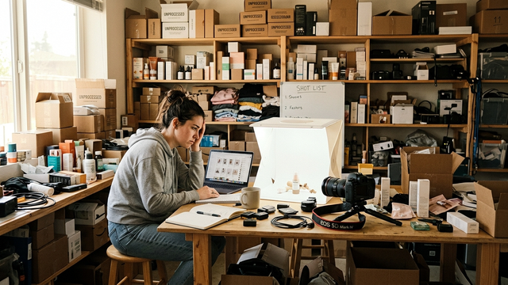
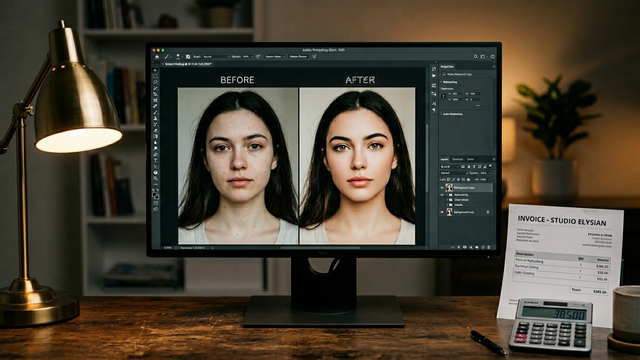

おすすめ記事
最新記事
ささげ外注の損益分岐点を考えた｜送料負けしない商材と判断基準
ささげ外注の往復送料と機会損失を比較。商材別の損益分岐点と内製＋外注のハイブリッド運用を整理した。

EC商品撮影が追いつかない時の対処法｜撮影だけ外注する判断基準
EC商品撮影が追いつかない原因と、内製で効率化する段取り、撮影だけを外注に切り出す判断基準を整理した。
写真レタッチの外注料金まとめ｜15社の相場を1ページに集約【2026年版】
色補正・肌レタッチ・切り抜き・合成など作業内容別の相場と、15社のサービス料金を1ページに集約。外注先を探している方の比較用に。

写真レタッチの外注費用はいくら？｜個人依頼の料金相場を加工別に比較
レタッチの外注費用を加工内容ごとに早見表で比較。肌補正・背景変更・不要物除去・色補正など1枚あたりの相場とボリュームディスカウントの仕組みを解説。
画像加工・レタッチを個人で依頼する方法まとめ
個人が写真のレタッチ・画像加工を依頼できるサービスの種類、依頼の流れ、料金相場、選び方のポイントを整理。
画像加工・写真編集を外注するならどこ？代行サービスの種類と選び方ガイド
専門業者・クラウドソーシング・フリーランスの3タイプを比較。料金帯・品質・納期の違いと、依頼前に準備しておくことを整理した。